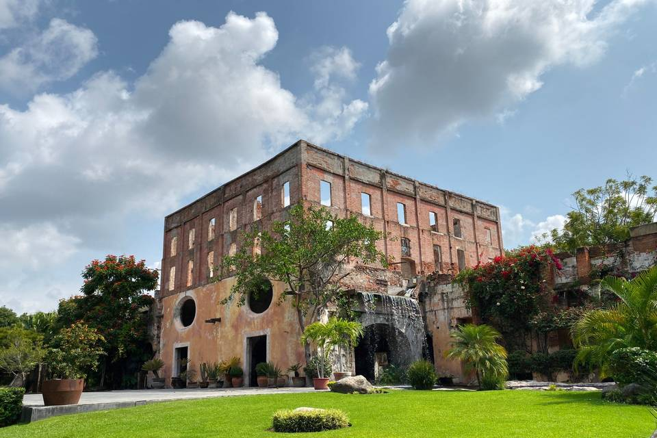
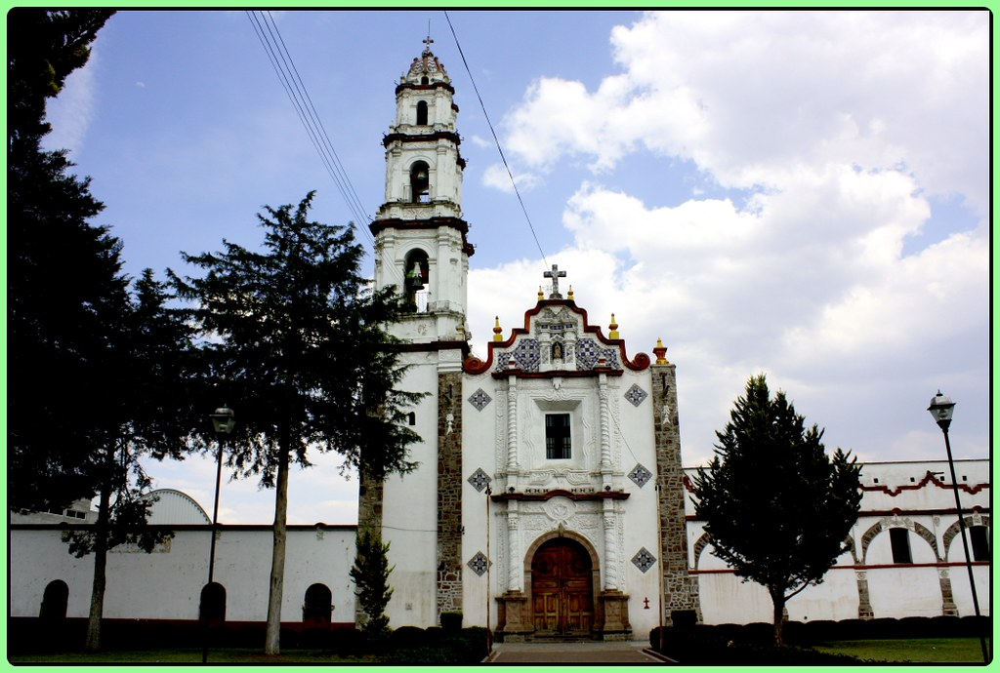

Ex Hacienda de Tepetzingo
Historia
La Ex Hacienda de Tepetzingo, ubicada en el municipio de Nopaltepec, Estado de México, es
un sitio de gran valor histórico y cultural que refleja la riqueza patrimonial de la región.
La Ex Hacienda de Tepetzingo fue una importante hacienda pulquera durante los años 40 del
siglo XX. En esa época, el pulque producido en la hacienda se transportaba en ferrocarril desde
la cercana Estación La Palma, ubicada a solo 1 km de distancia, hacia la Ciudad de México.
Esta actividad económica fue fundamental para el desarrollo de la región y dejó una huella significativa
en la historia local. Actualmente, el casco de la ex hacienda alberga el
Centro de Capacitación y Desarrollo Panamericano, que desde hace 25 años se dedica al entrenamiento de personal
especializado en el traslado de objetos de valor.

Ex Hacienda Santa Inés Amiltepec
Historia
La Ex Hacienda Santa Inés Amiltepec es una de las propiedades históricas más destacadas del municipio de Nopaltepec, Estado de México. Fundada en el siglo XVI, su historia está profundamente entrelazada con el desarrollo agrícola, religioso y político de la región.
La hacienda fue establecida en el siglo XVI por Diego Caballero, quien recibió la extensión de tierra directamente del virrey de la Nueva España. Durante esa época, el azúcar era considerada el "oro blanco" por su alto auge, y Morelos, por su clima, un lugar muy conveniente para su cultivo. Es por eso que Diego, en conjunto con su esposa Inés Velasco, decidieron hacer de la hacienda un ingenio azucarero.
Al no poder tener hijos, Diego e Inés decidieron en su testamento dejar la hacienda como un respaldo económico para que las mujeres de bajos recursos pudiesen entrar al convento, donde se les exigía un dote para poder formarse como monjas. Tras la muerte de Inés, Diego entregó las escrituras públicas de la hacienda y creó el Convento de Santa Inés en la Ciudad de México.
Para 1668, la Hacienda de Santa Inés pasaba a ser propiedad de las monjas de dicho convento.
A lo largo de los años, la hacienda ha pasado por varios dueños con relevancia histórica. En 1830, fue adquirida por Miguel Michaus, esposo de Guadalupe Velasco y Teruel, heredera de la Hacienda de Cocoyoc. Esto llevó a la familia Michaus Velasco y Teruel a ser propietarios de las Haciendas Santa Inés, Cocoyoc, Buenavista y el hospital.
Otro propietario notable fue Don Agustín Robalo, mentor del escritor y cónsul de México en París, Ignacio Manuel Altamirano. Durante muchos veranos, la hacienda fue un lugar de descanso y convivencia para ambos.
La hacienda también fue testigo de la vida de Narciso Mendoza, conocido como "El Niño Artillero", quien relató en cartas sus momentos felices vividos en la propiedad.
Según la leyenda, durante la Guerra de Independencia, Don José María Morelos y Pavón utilizó los antiguos túneles de la ex hacienda para escapar del sitio en Cuautla.
Los muros de la Hacienda Santa Inés han sido testigos de eventos significativos en la historia de México, desde el virreinato español hasta la revolución, pasando por la independencia y otras anécdotas que han marcado al país.

Ex Hacienda de San Miguel Ometusco
Historia
La Ex Hacienda de San Miguel Omestusco, ubicada en el municipio de Axapusco, es una edificación colonial del Siglo 18, santuario de la civilización tolteca. Fue construida por las familias Torres Adalid y Torres Rivas, y se caracterizó por ser productora de los diferentes derivados del maguey, sobre todo del pulque, durante la época porfirista.
La hacienda cuenta con 10 hectáreas y sus habitaciones no están numeradas; se encuentran identificadas con los nombres de los administradores que estuvieron a cargo del sitio.
La cocina cuenta con talavera original y todavía conserva la estructura de cuando fue construida. Además, en el exterior hay un horno, donde aún se cocina la barbacoa para los huéspedes.
El jardín tiene, aproximadamente, 30 especies de cactus de la región.
Cuenta con la denominada Capilla de Indios, donde el Padre de la época era la única persona que podía permanecer dentro. Ahí fue donde se casaron los señores Josefa y Agustín Torres Adalid; sin embargo, doña Josefa mandó construir una segunda capilla, en honor a su esposo fallecido; la capilla aún cuenta con frescos originales.

Ex Convento y Parroquia de Santo Domingo Aztacameca
Historia
El Ex Convento y Parroquia de Santo Domingo Aztacameca es una joya arquitectónica y espiritual ubicada en la comunidad de Santo Domingo Aztacameca, perteneciente al municipio de Axapusco, en el Estado de México. Este templo, construido en el siglo XVI, es uno de los más antiguos de la región y forma parte del legado histórico del Valle de Teotihuacán.
Originalmente, este edificio fue un convento franciscano donde se veneraba a San Francisco de Asís, motivo por el cual también se le conocía como San Francisco Aztacameca. Su estructura está hecha de piedra y argamasa, materiales típicos de la época colonial. Con el tiempo, el convento fue transformado en parroquia y actualmente está dedicado a Santo Domingo de Guzmán.
La parroquia forma parte del Decanato 5 de Axapusco dentro de la Diócesis de Teotihuacán, que abarca varios municipios del noreste del Estado de México, incluyendo Nopaltepec y Otumba.

Templo de San Esteban Protomártir
Historia
El Templo de San Esteban Protomártir se encuentra en la cabecera municipal de Axapusco, Estado de México. Este templo, de origen franciscano, fue construido en el siglo XVI y es considerado uno de los más hermosos de la región. Destaca por su arquitectura colonial y su importancia histórica en la evangelización del Valle de Teotihuacán.
La construcción del templo se inició en 1553 por los frailes franciscanos, quienes llegaron a la región en 1533. Inicialmente, establecieron una capilla en el barrio de Tlamapa, pero debido al crecimiento de la población, se decidió edificar una iglesia mayor en la cabecera municipal de Axapusco. El templo fue dedicado a San Esteban Protomártir y adornado con una pintura traída de España por fray Bartolomé de Olmedo, a petición de los indígenas a Hernán Cortés.
El templo cuenta con un majestuoso retablo con acabado en hoja de oro y una capilla especial para la Virgen de Guadalupe. En su interior se observan decoraciones con elementos de oro, destacando su altar mayor, que fue decorado con lámina del metal dorado en el siglo XVIII.

.jpg)